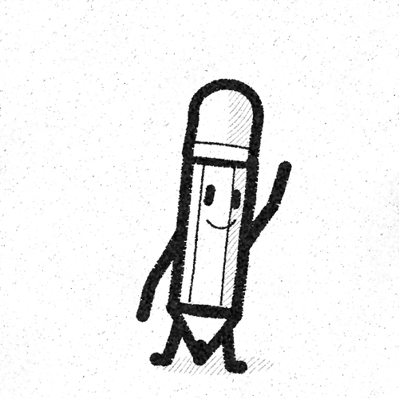

Rakugaki – Doodle Lives
Curious science questions answered with real science, drawn as simple black-marker doodles. Rakugaki is Japanese for "doodle".
Watch on YouTubeHow the videos are made
Each video takes one question about space, the human body, animals, the Earth or everyday things and works through it. The script is written and fact-checked with AI from real sources, and where scientists aren't sure, the video says so. The doodles are drawn by the channel's own code in black marker on paper, the narration is an AI voice, and Pencil Buddy, the channel's mascot, helps draw things in. The channel owner watches every video before it is posted. The sources are listed in each video's description.
Doodle Lives uploader
The channel uses a small private tool, the Doodle Lives uploader, to upload its own finished videos to its own YouTube channel, only after the channel owner watches and approves each one. Only the channel owner uses it. Read how it handles data in the privacy policy.